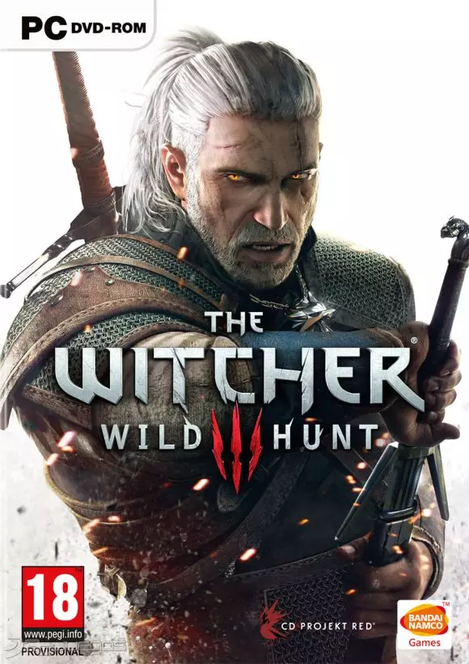

The Witcher 3: Wild Hunt es un aclamado videojuego de rol desarrollado por CD Projekt RED y lanzado en 2015. Basado en las novelas del autor polaco Andrzej Sapkowski, el juego sigue las aventuras del brujo Geralt de Rivia en un mundo oscuro de fantasía lleno de monstruos, conflictos políticos y elecciones morales.
The Witcher 3 destacó por su enorme mundo abierto lleno de vida, con regiones vastas como Velen, Novigrado, Skellige y Kaer Morhen. Cada lugar está cuidadosamente diseñado con historias, personajes y misiones únicas. La calidad narrativa y la densidad de contenido lo convirtieron en uno de los mundos más inmersivos jamás creados en un videojuego.
El sistema de combate mezcla esgrima, alquimia y señales mágicas, lo que permite a los jugadores personalizar su estilo de juego. Además, las decisiones tomadas por el jugador afectan significativamente el desarrollo de la historia y los finales posibles. El juego también incluye un sistema de progresión profundo, contratos de monstruos, fabricación de objetos, y el adictivo juego de cartas Gwent.
Desde su lanzamiento, The Witcher 3 ha sido ampliamente elogiado por su narrativa, personajes, ambientación y música. Ganó múltiples premios, incluyendo el prestigioso Juego del Año en 2015. Su éxito ayudó a consolidar a CD Projekt RED como uno de los estudios más respetados del mundo del videojuego, y convirtió a Geralt en un ícono cultural.
Con expansiones como Hearts of Stone y Blood and Wine, que fueron tan elogiadas como el juego base, The Witcher 3 se consolidó como un referente absoluto en los RPG modernos. A día de hoy, sigue siendo considerado uno de los mejores videojuegos de todos los tiempos por su profundidad, ambición y ejecución impecable.